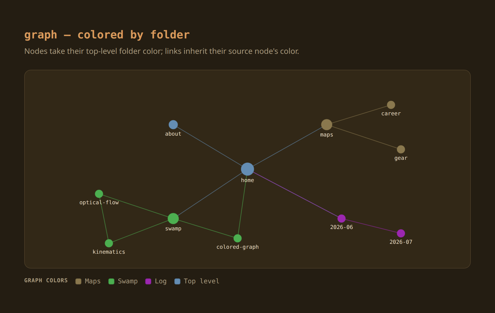
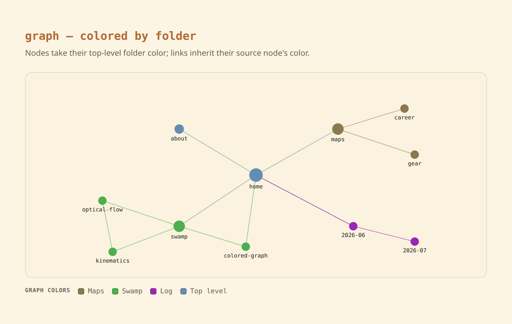

dg-graph-colors
Color the graph by folder — nodes and links, local and full view.


Gives every graph node a color derived from its top-level folder (Maps, Notes, Log, root, …) instead of one flat theme color; links inherit their source node's color. Applies to both the per-note local graph and the full /graph/ view. Original work — a cleaner, lower-risk rebuild of the "colored obsidian graph" feature.
graphScript.njk) already draws node.color and colors links by their source node — it just has no color to draw until you add one. So this skill only populates node.color at build time and changes nothing in the renderer.
How it works
A tiny additive helper wraps the graph data hook and stamps a color onto each node from a single folder→color map. graph.njk serializes it to /graph.json; the renderer reads it. The only edit to an existing file is one wrapping line in the user-owned _data hook.
_data hook: graph: addGraphColors(await getGraph(data)) ← 1-line wrap
→ graphColors.js node.color ??= folderColor(node.url)
→ folderColors.js { Maps:#…, Notes:#…, root:#…, default:#… }
→ /graph.json → graphScript.njk (core, UNEDITED) reads node.colorHow to use it
Copy the skill folder into your agent's skills directory, then in your Digital Garden repo ask:
git clone https://github.com/palol/skills-zoo.git
cp -r skills-zoo/skills/dg-graph-colors ~/.claude/skills/(or ~/.agents/skills/)
Use the dg-graph-colors skill to color my digital garden's graph by folder. Drop in the two helpers, set my folder→color map, apply the one-line wrap to the graph data hook, add the optional legend, then build and walk me through verification.
What it touches
- New helper:
src/helpers/folderColors.js— the folder→color map (single source of truth). - New helper:
src/helpers/graphColors.js—addGraphColors, a read-only build-time transform that stampscolorper node. - One wrap line:
_data/eleventyComputed.js(user-owned_datapath) pipes the graph throughaddGraphColors. - Optional legend (autoloaded footer slot) + SCSS appended to
custom-style.scss.
linkUtils.js build helper. This skill avoids that: it adds two new files and one wrap line in a user-owned _data file, leaving linkUtils.js and the renderer untouched. Build-time, read-only, idempotent, and reversible by reverting one line.
What's in the box
- SKILL.md — install workflow, invariants, risk
- assets/folderColors.js — the folder → color map (edit this)
- assets/graphColors.js — build-time color injector
- references/eleventyComputed.graph-hook.md — the exact one-line wrap + fallback
- assets/zz-graph-legend.njk — optional autoloaded footer legend
- assets/graph-colors.scss — optional legend styles (TUNING KNOBS on top)
- references/architecture.md — renderer support, data flow, why L2 not L3
- references/tuning.md — palette, color-by-something-else, legend knobs
- references/verify.md — build / graph.json / browser / legend QA
Prerequisites
- An oleeskild Digital Garden (Eleventy) fork with the Pixi graph (
graphScript.njkpresent). - The graph global built via
linkUtils.getGraph— stock DG wires this in_data/eleventyComputed.js. Confirm withgrep -rn "getGraph(" src/site/_data/. - User-component autoloading (only for the optional legend).
Scope is Digital Garden only — this is the published-site graph, not Obsidian's in-app graph, and not Quartz.